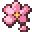
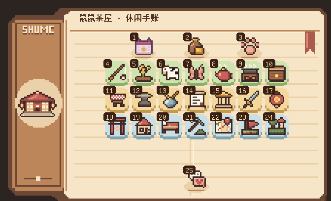
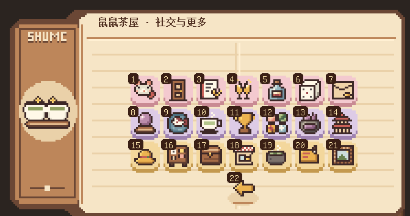

欢迎来到 SHUMC鼠鼠茶屋
一座樱花茶屋小镇里的养老生存服：种田、钓鱼、泡茶、交朋友，不逼肝，慢慢来。
这本百科写给刚进服的新茶客。先看下面的「前 10 分钟」，之后想了解哪个玩法，就从左边目录或右上角搜索直接跳过去。
🌸 前 10 分钟怎么玩 📜 常用指令速查

记住一个按键就够了：潜行 + F
按住 Shift 再按 F（副手键），或右键背包里的 ☕ 鼠鼠茶屋手账，就能打开总菜单 /menu。几乎所有玩法都能在菜单里点开，不用背指令。手账丢了也没关系，下次进服会自动补发一本。
聊天栏里出现的 [按钮] 也都能直接点。
前 10 分钟
进服后你会出生在 樱溪茶屋镇 的中央广场，面朝正南的商业大街。照下面的顺序走一遍，十分钟内就能有钱、有家、有方向。
- 领见面礼 第 1 分钟
输入/guide打开 11 页的《玩家大绘本》，点左下角 🎁 新手见面礼：30 茶屋币 + 面包 ×8 + 樱花树苗 ×2（每人限领一次）。绘本里也能领一本可以随身翻的实体手册。 - 每日签到 第 2 分钟
输入/qiandao（或点上线时聊天栏「🌸 今日小事」里的 [✅ 签到]）：每天 50 茶屋币 + 8 份烤牛排 + 16 根火把 + 经验；每累计 7 天额外 +100 币和 1 颗金苹果。签到还会顺手抽今日运势签。 - 租一块地安家 第 3 分钟
输入/dipi打开环城庄园列表，绿色的是空地。31×31 庄园 30 币 / 7 天，见面礼的 30 币刚好够；自带一栋木屋，只有你和你授权的好友能建造。到期不续租会被收回。
不想租？走出东南西北任意城门就是永久不重置的樱花山谷自由建造区，用金铲子圈地即可，见 领地与家。 - 选一门生活专精 第 5 分钟
输入/job在农艺师 / 垂钓客 / 酿造师 / 探矿匠里选一个主修（选定后 7 天内不能换）。做本行的事会涨专精等级、点天赋，见 职业专精与天赋。 - 先去钓几条鱼 第 6 分钟
主城的樱溪就能钓到樱花林限定鱼。输入/spawn fish直接传送到樱溪东岸栈道。钓到的鱼会进/fish图鉴，集齐 5 种就有第一份奖励。 - 卖掉换钱 第 8 分钟
输入/sell一键卖出背包里的鱼、作物、牧场品、昆虫和工坊成品（不会卖你的盔甲和副手诱饵）。今天哪样东西热卖、价格翻倍，菜单里「茶屋钱包」会写。 - 看看今天的委托 第 10 分钟
输入/quest：每天 8 项小委托（钓 5 条鱼、出货 10 件、敲 1 个晶洞……），全部领完再开一个「全勤礼盒」。顺便/fortune看看今天的运势签有什么加成。
新手最常问
大型挖矿、砍树去哪？ 用 /ziyuan 或 /rtp 去资源世界（含下界、末地），每周重置、死亡不掉落。主世界永久保留，请爱护风景。
迷路了？ /spawn 回主城，/home 回家，/back 回到上次传送或死亡的地方。
主菜单长什么样
下面是游戏里按 Shift+F 打开的「茶屋手账」主菜单（由服务器插件真实生成的菜单渲染图）。第一行是每天必点的签到、钱包、萌宠；接下来三行按「采集生产 / 加工商店 / 出行与家园」分区；底部的 🌸 社交与更多 里是搭子、许愿池、运势、玩家商店等。




玩法地图
每个玩法都有自己的页面，点卡片进入。
主城与新手引导
樱溪茶屋镇的四个方向、商业街五大专柜、资源世界

经济 · 茶屋币
怎么赚、怎么花、出货额度、委托与悬赏

职业专精与天赋
四大专精、Lv1–20、天赋树、主动技能
农耕与牧场
17 种四季作物、温室、洒水器、动物好感与加工机

钓鱼、图鉴与捕虫
75 种鱼与奇物、十大钓区、诱饵、钓鱼大赛、24 种昆虫
四季与庆典
每 3 天换季、季节增益、四季庆典、流星雨
工坊 · 料理 · 锻造
茶饮果酱烘焙、3D 宴席、装备升星铭刻、饰品、晶洞

冒险公会
每日讨伐、秘境试炼 Boss、神兵军械库

社交 · 萌宠 · 许愿池
搭子合居、串门点赞、干杯、萌宠、锦鲤池、全服共建

领地与家
环城庄园、商街旺铺、一键圈地、箱子商店

常用指令速查
所有玩家指令和中文/拼音别名
每天上线一分钟
上线时聊天栏会出现一行「🌸 今日小事」按钮，挨个点一下就领齐了：
| 做什么 | 指令 | 得到什么 |
|---|---|---|
| 每日签到 | /qiandao | 50 币 + 烤牛排 ×8 + 火把 ×16；每满 7 天 +100 币 + 金苹果；还会给全服许愿池注资 |
| 今日运势 | /fortune | 每天一支签，附带一项轻度加成（例如工坊升星 +20%） |
 每日委托 每日委托 | /quest | 8 项小目标，每项 80–120 币 + 补给；全部领完再开全勤礼盒（150 币 + 5 福气值 + 当季香料） |
 锦鲤许愿池 锦鲤许愿池 | /pool | 投币攒全服狂欢，同时攒福气值换永久特效和称号 |
| 庆典打卡 | /festival | 每天免费 40 币 + 5 分钟幸运 I（庆典进行中 80 币） |